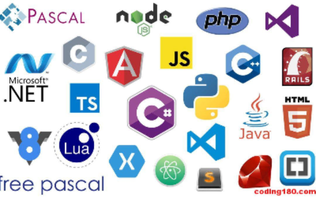

There are many programming languages used all throughout the world and for many different purposes. This website presents 3 common programming languages with what it is most used for, how common it is and why people like to use this specific language.
Choose one of the languages in the top navigation bar to begin.